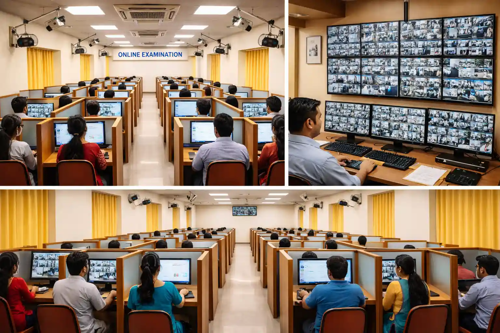

Biometrics, CCTV arrangement, call center operations, control room support, and coordinated on-ground assistance designed to strengthen large-scale service delivery.
Candidate verification, staff attendance capture, and secure identity checks for high-volume environments.
Site-level surveillance planning, camera deployment, monitoring support, and operational recording control.
Inbound and outbound support desks for candidate communication, issue triage, and operational updates.
Live coordination desks, escalation routing, and command-center style visibility during critical deployments.
Biometric validation built for high-footfall environments where secure identity checks must stay quick, accurate, and audit-ready.
Fingerprint and face capture flows reduce delays at entry and attendance points.
Onsite teams manage enrollment points, device uptime, and exception handling.
Every capture and validation point can be tracked for reporting and compliance.

Structured surveillance planning and monitoring support that gives operations teams continuous visibility across sensitive zones.
Critical blind spots and high-value areas are mapped first.
Field teams align placement, angles, and coverage priorities.
Live feeds are watched with clear escalation and reporting flow.
Recorded events and exceptions stay organized for review.
We assess manpower, equipment, coverage zones, and communication needs before deployment.
Biometric devices, CCTV points, helpline processes, and reporting desks are activated and verified.
Real-time support teams coordinate escalations, operational issues, and field-level exceptions.
We close deployments with exception logs, support metrics, attendance records, and event summaries.
Identity verification support for attendance, candidate validation, and controlled check-in processes.
Camera planning, onsite arrangement, supervision support, and visibility control for sensitive environments.
Managed communication desks for inbound support, outbound reminders, and candidate or employee assistance.
Hybrid on-ground and remote assistance for issue resolution, coordination, and operational continuity.
Centralized operational monitoring with dispatch visibility, live updates, and exception routing.
Structured visitor, staff, and candidate movement control for secure and high-traffic environments.
Structured announcement, calling, and public communication support for high-footfall managed environments.
Movement support for entry, waiting areas, and controlled routing during large operational events.